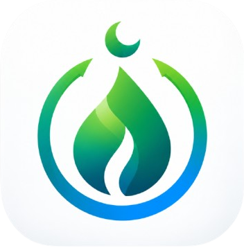
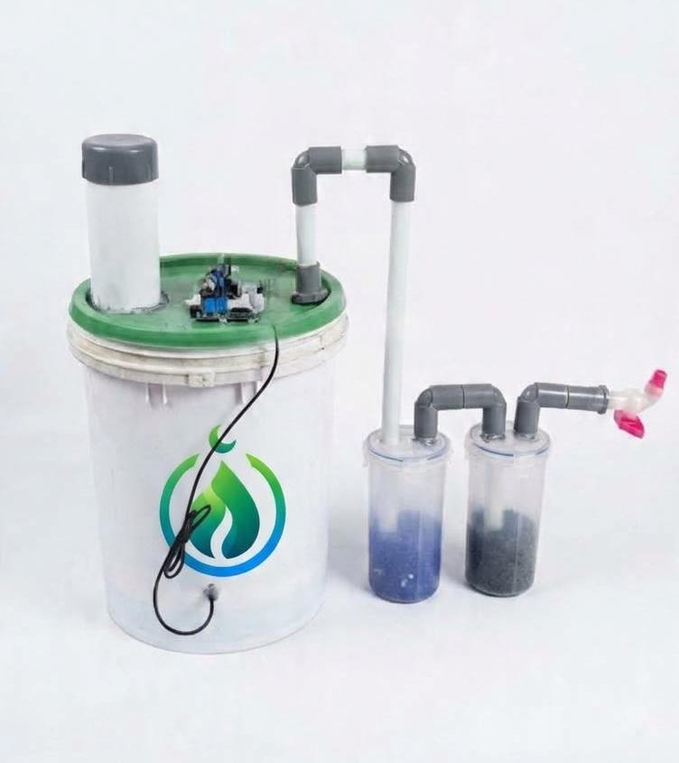
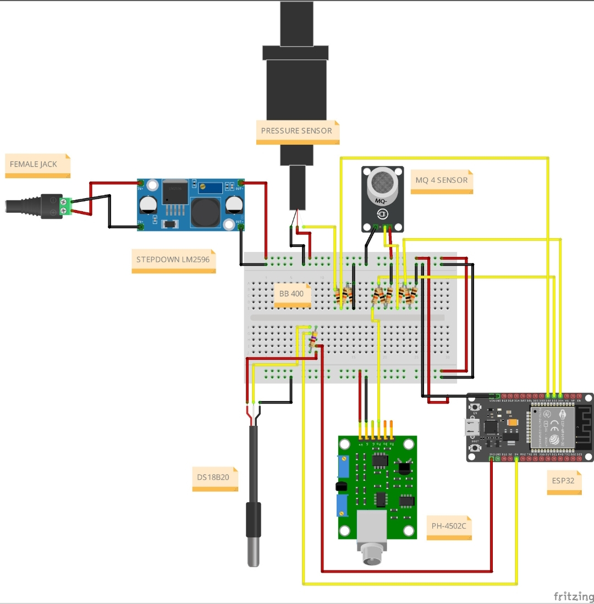

Poster Resmi BIOMA'HAD SMART
Tim DEBUGGERS - UIN SMH Banten


Pengembangan Prototipe Biodigester Berbasis Internet of Things (IoT) untuk Mendukung Kemandirian Energi Ma'had Melalui Circular Economy yang Berkelanjutan.

BIOMA'HAD SMART adalah sistem pengolahan limbah organik terintegrasi yang mengubah sampah dapur basah dan sisa makanan Ma'had menjadi sumber energi terbarukan berupa biogas terukur, sekaligus menghasilkan pupuk hayati cair yang ramah lingkungan.
Dilengkapi sistem monitoring berbasis Internet of Things (IoT) untuk mengamati kondisi fermentasi anaerobik secara berkelanjutan guna mencegah terjadinya akumulasi asam berlebih (sour digester).
Komponen sensor tingkat tinggi yang diintegrasikan ke dalam platform IoT untuk pemantauan parameter biodigester yang akurat dan responsif.

Diagram Skematik Rangkaian Elektronik BIOMA'HAD SMART
Tahapan efisien pengolahan sampah organik menjadi energi terbarukan secara otomatis.
Masukkan sampah organik sisa makanan Ma'had yang telah dipilah dan dicampur air dengan rasio 1:1 ke dalam reaktor anaerobik.
Jaringan sensor mengirimkan data suhu, pH, dan konsentrasi metana secara otomatis via ESP32 untuk memantau proses anaerobik.
Biogas murni siap dimanfaatkan untuk kompor, sedangkan ampas olahan dapat dimanfaatkan sebagai pupuk tanaman hayati.
Solusi inovatif yang mengubah limbah organik menjadi energi bersih untuk kebutuhan energi Ma'had serta mendukung terciptanya konsep Kampus Hijau secara terpadu.